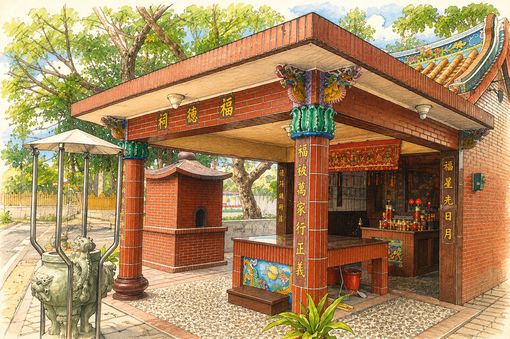
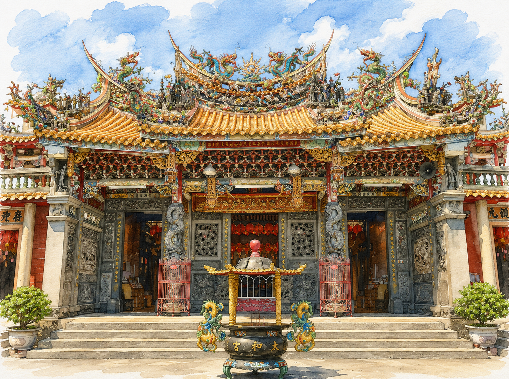
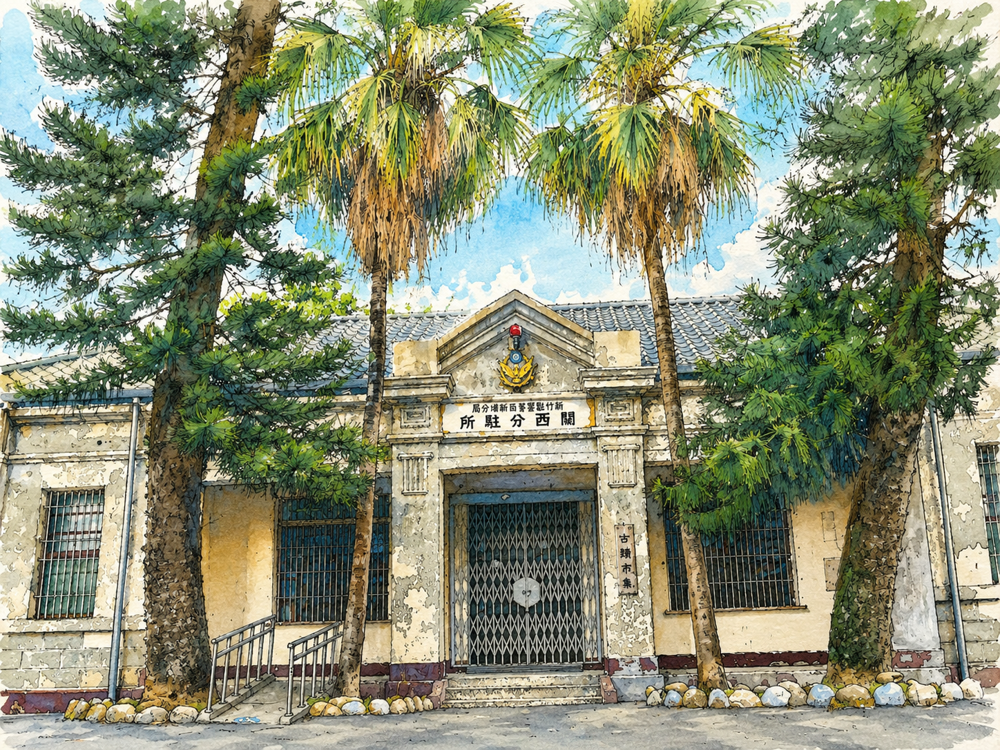
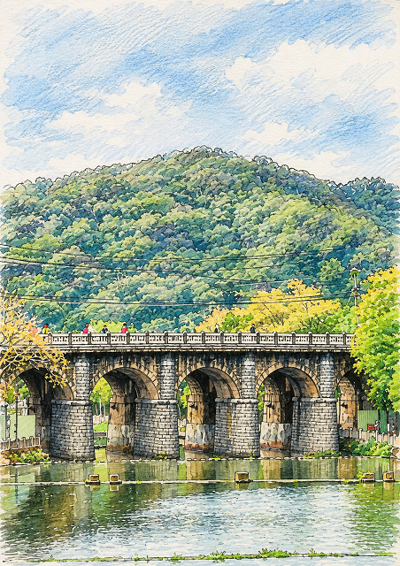
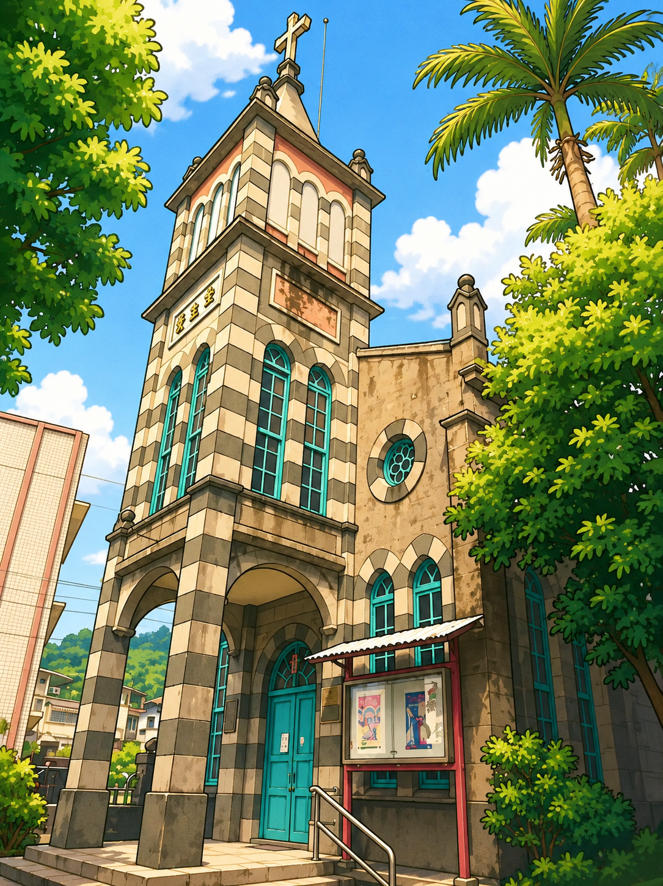

六個年級，六座建築
點選圖卡開啟該年級課程網
GRADE 01 ・ 一年級
關西國小伯公廟
校園旁的土地守護神
走出校門就到了。老樹下的伯公看著孩子上下學，孩子學著擲筊、唱客語歌謠「伯公伯婆」，在最近的一座廟裡認識「家鄉」這兩個字。
進入課程 →
GRADE 02 ・ 二年級
關西太和宮
淨靜敬・太和情
人稱三界廟的鎮上信仰中心。六節課從初探、閱讀傳說到實地踏查，最後在紅紙上寫下客語祈福字句，做成自己的平安符與創意小書。
進入課程 →
GRADE 03 ・ 三年級
關西分駐所
守護與守戶
大正九年落成的興亞樣式建築。黑瓦、鬼瓦、破風與會唱歌的鶯聲地板，都是線索——孩子化身時光偵探，一關一關解開這棟房子的身世。
進入課程 →
GRADE 04 ・ 四年級
關西羅屋書院
羅屋築蹟～書院足跡
上南片的一堂四橫大宅。從「豫章堂」三個字讀出一族人的遷徙史，看石雕木雕剪黏，動手剪一張對稱窗花，再畫出自己的書院輕旅地圖。
進入課程 →
GRADE 05 ・ 五年級
戀戀牛欄河
牛欄河・東安古橋
縣定古蹟東安古橋橫跨牛欄河，五孔石拱一二三四五，數過去就是一段關西史。沿著親水公園走一圈，把看見的、聽見的寫成一首詩。
進入課程 →
GRADE 06 ・ 六年級
關西天主堂
建築傳說～關西天主堂
矗立關西超過一甲子的哥德式地標。洗石子牆面、尖塔與彩繪玻璃窗，由修女親自接待導覽；畢業前，孩子用國、客雙語做一場自己的專題導覽。
進入課程 →